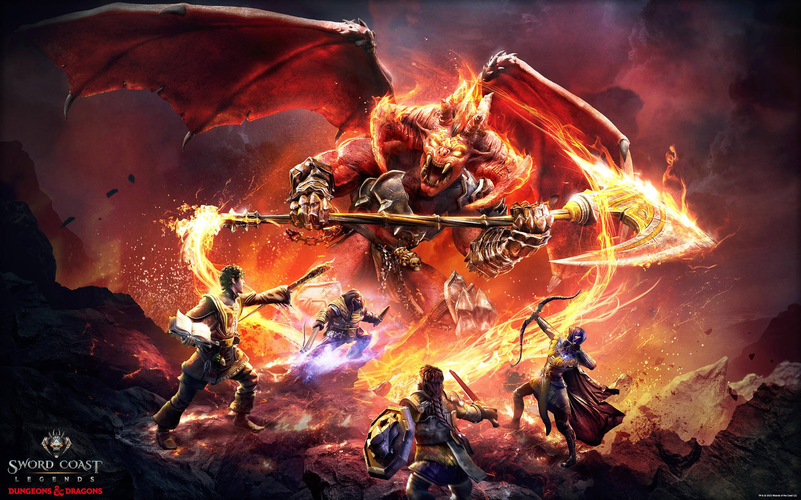
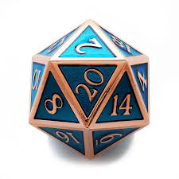
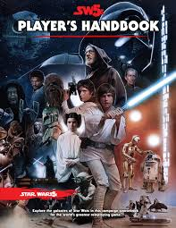
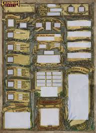
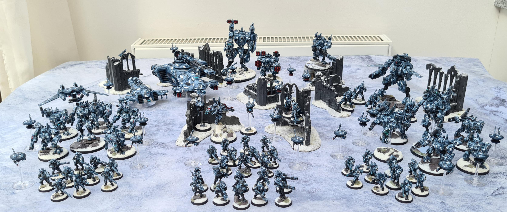

Table-Top RPGs
Roll the dice and shape your own story!
What is a Table-Top RPG?
A Table-Top Role-Playing Game (TTRPG) is a type of game where a group of players sit together — around a real table or online — and tell a collaborative story. One player takes on the role of the Game Master (sometimes called a Dungeon Master, or DM), who describes the world and its challenges. The other players each create a unique character, making decisions and rolling dice to see how those choices play out.
Think of it like being the star of your own movie, except you and your friends write the script together as you go! There are no screens required, no controllers, and no wrong way to play. All you need is your imagination, a few dice, and some willing adventurers.

Getting Started
Starting a TTRPG adventure is easier than you might think. Here are a few great options for newcomers:
- Dungeons & Dragons (D&D 5e) – The most popular TTRPG in the world. The free Basic Rules on the official D&D website let you try before you buy.
- Pathfinder 2e – A great alternative to D&D with deep character customization. The Core Rulebook is available for free online.
- Kids on Bikes – A lighter, story-driven game perfect for families and younger players inspired by movies like Stranger Things.
- One-Shot Adventures – Short, self-contained stories that wrap up in a single session — perfect for first-timers!
Many local game shops host beginner-friendly "Adventurers League" nights where you can jump into a game without any preparation at all.
What Do You Need to Play?
| Item | Purpose | Cost |
|---|---|---|
| Rulebook | The game's core instructions | Free – $50 |
| Dice Set (d4–d20) | Determining outcomes | $5 – $20 |
| Character Sheet | Track your hero's stats | Free (printable) |
| Pencils & Paper | Notes and maps | Around the house! |
| Friends (2–5 players) | The whole adventure! | Priceless |
Popular Table-Top RPGs to Explore
The world of TTRPGs is huge! Here are some well-loved titles across different themes and playstyles:
Dungeons & Dragons
The classic fantasy RPG set in magical worlds full of dragons, dungeons, and daring heroes. Ages 10+.

Pathfinder 2e
Deep strategy meets epic storytelling in this fan-favorite game with hundreds of character options. Ages 13+.

Star Wars RPG
Travel to a galaxy far, far away and forge your own legend as a Jedi, smuggler, or rebel hero. Ages 10+.

Traveller 5E
A sci-fi classic reimagined for modern players. Explore the stars, trade, and survive the cosmos. Ages 12+.
Frequently Asked Questions
Not at all! Every experienced player was once a complete beginner. Many groups actively welcome new players, and there are tons of free "how to play" videos on YouTube. D&D's Starter Set is specifically designed to teach you as you go.
Absolutely! TTRPGs are collaborative storytelling games that encourage creativity, teamwork, problem-solving, and empathy. Many families play together. The content level is entirely up to the players — you control the tone of your adventure.
Yes! Platforms like Roll20 and Foundry VTT let you play with friends anywhere in the world using digital maps and dice. Many groups use Discord for voice chat during sessions.
A typical session runs 2–4 hours, though some groups play shorter one-shot adventures in a single afternoon. Long-running campaigns can tell stories over months or even years of weekly sessions!
The Adventure Awaits
Whether you dream of slaying dragons, exploring alien planets, solving mysteries, or just sharing laughs around the table, there is a TTRPG out there for you. The best place to find your next adventure is at your local game store, or by searching for an open table on StartPlaying.Games.

Character Sheet
Miniatures on a Battle MapUseful Links
- D&D Beyond – Official digital toolset for Dungeons & Dragons
- Paizo – Pathfinder – Free rules and adventure paths
- Roll20 – Play TTRPGs online with friends
- TTRPG Fans – News, reviews, and community